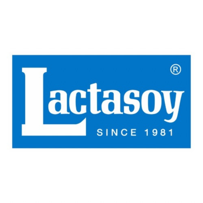
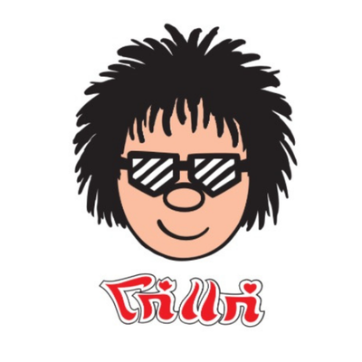
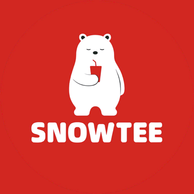

ชมรมปาฐกถาเเละโต้วาที มหาวิทยาลัยกรุงเทพ
Speech and Debate Club Bangkok University
พื้นที่สำหรับนักศึกษาที่สนใจพัฒนาทักษะด้านการพูด การสื่อสาร การโต้วาที เเละการเป็นพิธีกร
เพราะเรา...
"ไม่ใช่เเค่สอนให้คุณพูดได้ เเต่เราสอน ให้คุณพูดเป็น"
พื้นที่สำหรับนักศึกษาที่สนใจพัฒนาทักษะด้านการพูด การสื่อสาร การโต้วาที เเละการเป็นพิธีกร
เพราะเรา...
"ไม่ใช่เเค่สอนให้คุณพูดได้ เเต่เราสอน ให้คุณพูดเป็น"
ขอขอบคุณผู้สนับสนุนทุกท่านที่มีส่วนสำคัญในการผลักดันกิจกรรมของชมรมให้เกิดขึ้นได้อย่างสมบูรณ์



มาค้นหาสไตล์การพูดของคุณ ผ่านแบบทดสอบสนุกๆ ที่ออกแบบมาเพื่อสมาชิกชมรมปาฐกถาและโต้วาที
พร้อมค้นพบตัวตนของคุณแล้วหรือยัง?
🚀 เริ่มทำแบบทดสอบ